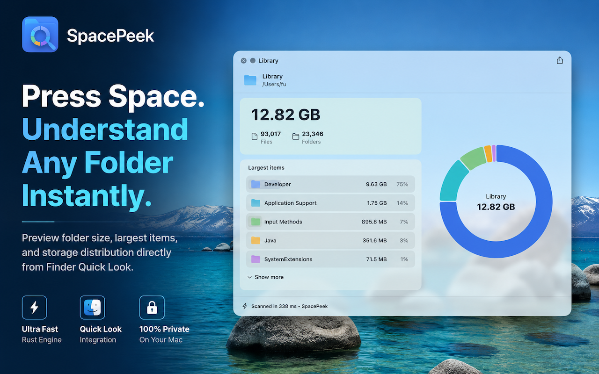
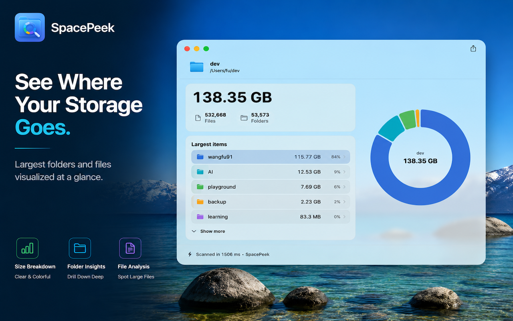
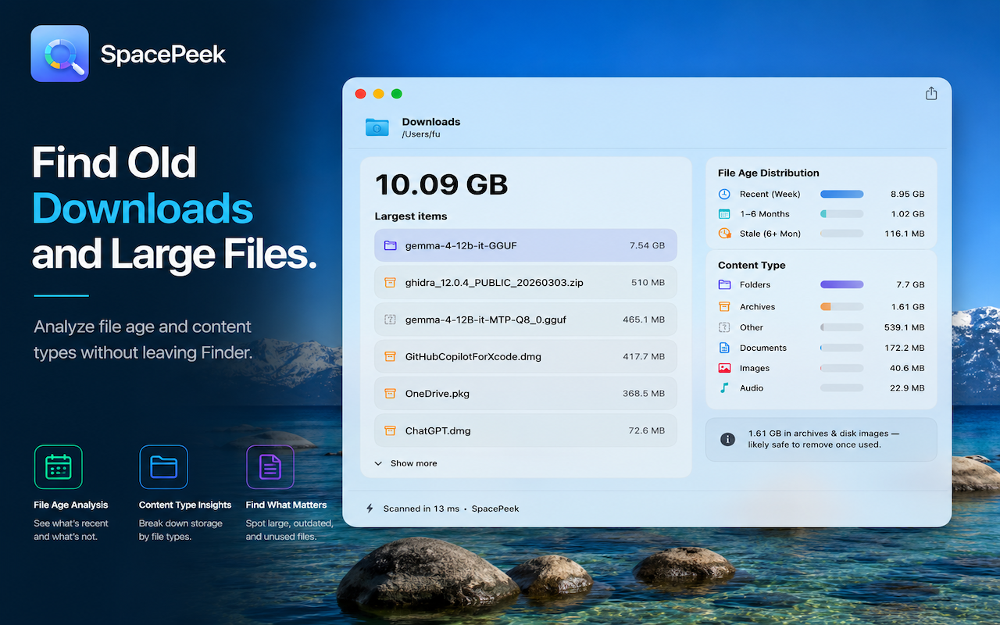
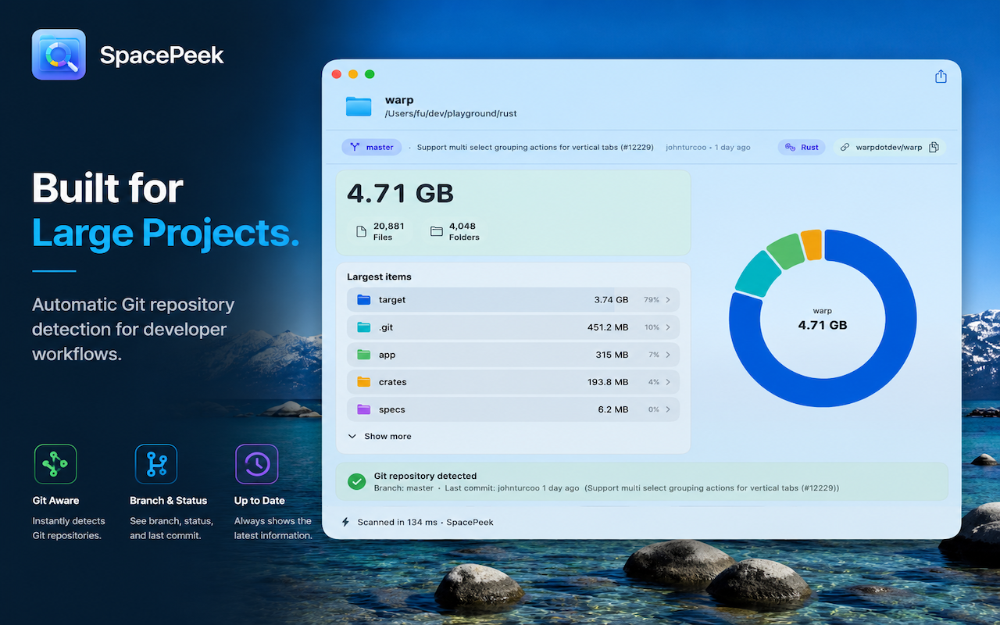

Finder QuickLook Extension
Select a folder in Finder and open SpacePeek instantly for a clear storage breakdown.
macOS Utility
Select a folder in Finder, press the Space Bar, and SpacePeek shows you which items are taking up space.




Features
Select a folder in Finder and open SpacePeek instantly for a clear storage breakdown.
See counts and storage details without launching a heavy disk utility.
Identify the folders and files using the most space for easier cleanup.
Move through nested folders and inspect deeper storage distribution inside the preview.
SpacePeek does not upload, track or process your files remotely.
How It Works
Choose any folder in Finder that you want to inspect.
Quick Look opens SpacePeek directly from Finder with no extra setup.
Review the size breakdown, item counts and top space consumers right away.
Screenshots


SpacePeek Pro
The free version lets you explore up to two levels deep; upgrade once to unlock unlimited drill-in.